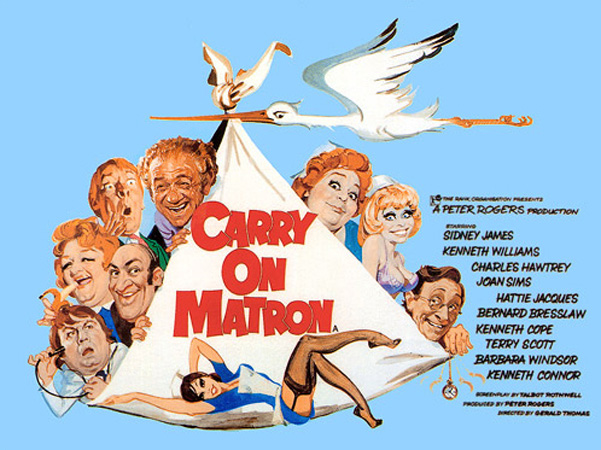
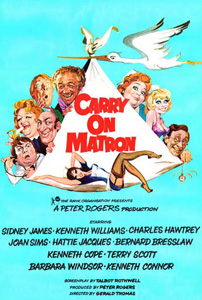

Peter Rogers
Laura Collins (uncredited)
Sid Carter (Sid James) is the cunning head of a criminal gang that includes the longhaired drip Ernie Bragg (Bernard Bresslaw), the cheeky Freddy (Bill Maynard) and Sid's honest son, Cyril (Kenneth Cope). Cyril does not want a life of crime, but is emotionally blackmailed by his father into going along with his scheme to rob Finisham Maternity Hospital for its stock of contraceptive pills and sell them abroad. Cyril reluctantly disguises himself as a new female nurse to case the hospital and the booty. Assumed to be one of the new student nurses who have just arrived, he is assigned to share a room with the shapely blonde nurse, Susan Ball (Barbara Windsor). Unfortunately for Cyril, he also catches the eye of the hospital lothario, Dr Prodd (Terry Scott).
Sir Bernard Cutting (Kenneth Williams), the hypochondriac registrar of the hospital, is convinced he's undergoing a sex change. When he consults the nutty Dr F.A. Goode (Charles Hawtrey), Goode dishes out psychiatric mumbo jumbo, stating that Cutting merely wants to prove his manhood, and Cutting decides he is in love with Matron (Hattie Jacques). Matron, on the other hand, has more than enough to contend with on the wards, with the gluttonous patient Mrs Tidey (Joan Sims) who seems more interested in eating than producing a baby, and her long-suffering British Rail worker husband (Kenneth Connor) who continually hangs around the waiting room.
When Cyril goes back to Prodd's room to get a map of the hospital, Prodd attempts to get intimate, only to be knocked across the room. Prodd and Cyril are called out on an emergency when lovely film star Jane Darling (Valerie Leon) goes into labour, but as Cyril knocks Prodd out in the ambulance, he is forced to deal with the actress's triplets being born. Jane Darling is delighted with Cyril and hails "the nurse" a heroine for her efforts, bringing fame to the hospital. Susan uncovers Cyril's disguise, but as she is in love with him, does not reveal the truth.
The much put-upon Sister (Jacki Piper) desperately tries to keep the ward in order, while Cutting's secretary, Miss Banks (Patsy Rowlands) keeps her employer in check, but nothing can cool his pent-up desire to prove himself as a man, and it's Matron who's in his sights. The criminal gang don disguises – Sid dresses as the foreign "Dr Zhivago" and Ernie as a heavily expectant mum – but the crime is thwarted by the mothers-to-be. The medical hierarchy's threat to call the police is halted when Sid reveals the heroine of the day is a man, and the hospital realise they would suffer nationwide humiliation if anyone found out. Cyril weds his shapely nurse Susan, and Matron finally gets her doctor.
Filming dates: 11 October - 26 November 1971.
Interiors: Pinewood Studios, Buckinghamshire.
Exteriors: (1) Heatherwood Hospital, Ascot, Berkshire, (2) The White House, Denham, Buckinghamshire, (3) St Mary's Church, Denham, Buckinghamshire.
After Carry On At Your Convenience flopped at the pictures, the producers had to get bums back on seats, so a prompt return to medical matters was called for. This is the last of the the medical Carry Ons and is also the lewdest, featuring such eyebrow raising character names as Dr. Prodd, Nurse Ball, Dr F A. Goode, Miss Willing, Mrs Pullitt etc.
Along with the next film in the series (Carry On Abroad), it features the highest number of the regular Carry On team. The only regular members missing are Jim Dale and Peter Butterworth. Dale would return belatedly for Carry On Columbus in 1992 and Butterworth returned in a major role in Carry On Abroad the following year. Butterworth was due to play Freddy but was unable because of other work engagements.
Jack Douglas made his first appearance in the films as the 'Twitching Father'. He claimed he was paid in champagne due to production costs having been finalised before he was awarded the role, however Peter Rogers denied this.
At-A-Glance Film Review - "this is Hattie Jacques' film, through and through. Jacques had already refined her matron character earlier in the series, and yet somehow she is even more wonderful here. Her character this time out is as austere as ever, but this time her personality is tempered with motherly compassion. It allows her to be as funny as she ever was, while also being arguably the most likable character in the whole series. This sets up a madcap romantic story arc with Kenneth Williams, which involves a lot of people hiding in furniture. Jacques and Williams had been paired similarly in prior films, to great comic effect, but their work is funniest here, where despite the madness, we care about what happens."
